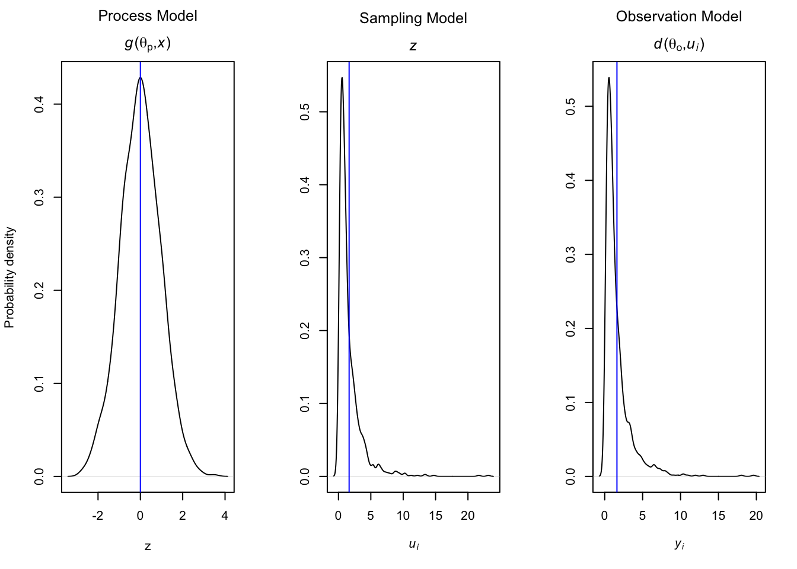
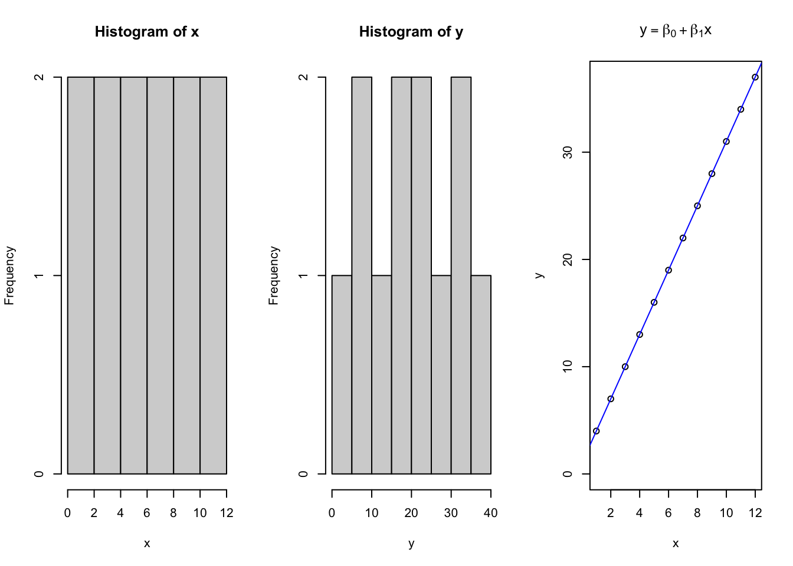
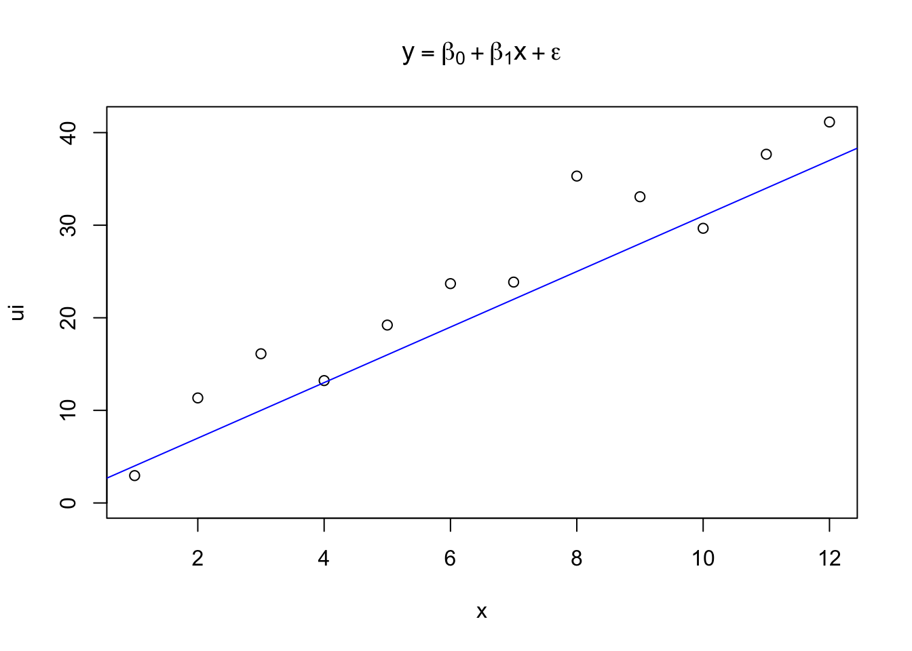

Chapter 3 Probability Distributions
3.2 Establishing inference
Establishing inference involves understanding how the state of our ecological system changes over time, between individuals, or across space. Our results rely upon observations drawn from the system, because the system (total space) is to large to observe in totality (Hobbs and Hooten 2015). Thus, we have three sources of variation which may be driving our collected data.
# Linked probability functions ----
par(mfrow = c(1,3))
# Process model -----
z = rnorm(1000, mean =0, sd = 1)
# density(z)
plot(density(z),
main = expression(atop('Process Model', paste(italic('g'),'(',theta[p],',',italic('x'),')'))),
xlab = 'z', ylab = 'Probability density')
abline(v=0, col = 'blue')
# Sampling Model ----
u = rlnorm(1000, 0, 1)
plot(density(u),
main = expression(atop('Sampling Model',italic(z))),
xlab = expression(italic(u[i])), ylab = '')
abline(v = mean(u), col = 'blue')
# Observation model ----
y = rlnorm(1000)
plot(density(y),
main = expression(atop('Observation Model', paste(italic('d'),'(',theta[o],',',italic(u[i]),')'))),
xlab = expression(italic(y[i])), ylab = '')
abline(v = mean(y), col = 'blue')
3.2.1 Process model
First is the process model, or a deterministic function which represents some theoretical state of the system based upon our current conceptual understanding. The process model can come from our own understanding or observation of the system, pilot data, or previous studies. The process model should include our prediction of how the system functions, including any natural or imposed effects from treatments on the system. The process function is represented by \[g(\Theta_p, x)\]. An example of a process model might be a linear growth function \[f(x) = mx + b\] where fixed values of m and b get mapped as a single function of our variable of interest.
x = seq(1,12, 1) # Independent X parameter placed on the X axis
b0 = 1 # Specify the Y intercept
b1 = 3 # Specify the B1 coefficient i.e. the slope
y = b0 + b1*x
par(mfrow = c(1,3))
hist(x)
hist(y)
{
plot(x,y, ylim = c(0,max(y)), main = expression(y == beta[0] + beta[1]*x))
abline(lm(y~x), col = 'blue')
}
## Warning in summary.lm(lm(y ~ x)): essentially perfect fit: summary may be unreliable##
## Call:
## lm(formula = y ~ x)
##
## Residuals:
## Min 1Q Median 3Q Max
## -2.788e-15 -1.578e-15 -4.107e-16 3.248e-16 8.485e-15
##
## Coefficients:
## Estimate Std. Error t value Pr(>|t|)
## (Intercept) 1.000e+00 1.900e-15 5.264e+14 <2e-16 ***
## x 3.000e+00 2.581e-16 1.162e+16 <2e-16 ***
## ---
## Signif. codes: 0 '***' 0.001 '**' 0.01 '*' 0.05 '.' 0.1 ' ' 1
##
## Residual standard error: 3.087e-15 on 10 degrees of freedom
## Multiple R-squared: 1, Adjusted R-squared: 1
## F-statistic: 1.351e+32 on 1 and 10 DF, p-value: < 2.2e-163.2.2 Sampling model
The sampling model accounts for the precision in observational methods of the systems true state. Uncertainty arises as our observations most definitely do not represent the system’s true state. We can estimate this stoichastistically using the expression \[[u_i|z,\sigma_s^2]\] which assumes we can collect many observed instances of the true system state without bias, and z will arise to represent approximately the true state of the system for that variable. This can be added to our above process model by modeling the variance of the sampling method of our observed values, Y.
n = length(y) # Number of random values to generate
u = 3 # approximate mean of the variation of the systems sampling values
sigma = 5 # Standard deviation of the systems sampling values
e = rnorm(length(y),u,sigma)
ui = y + e
{
plot(x,ui, ylim = c(0,max(ui)), main = expression(y == beta[0] + beta[1]*x + epsilon))
abline(lm(y~x), col = 'blue')
}
##
## Call:
## lm(formula = ui ~ x)
##
## Residuals:
## Min 1Q Median 3Q Max
## -5.2789 -1.9543 -0.0473 1.3839 6.6512
##
## Coefficients:
## Estimate Std. Error t value Pr(>|t|)
## (Intercept) 3.4930 2.0662 1.691 0.122
## x 3.1452 0.2807 11.203 5.56e-07 ***
## ---
## Signif. codes: 0 '***' 0.001 '**' 0.01 '*' 0.05 '.' 0.1 ' ' 1
##
## Residual standard error: 3.357 on 10 degrees of freedom
## Multiple R-squared: 0.9262, Adjusted R-squared: 0.9188
## F-statistic: 125.5 on 1 and 10 DF, p-value: 5.559e-073.2.3 Observation model
The observation model is similar to the sampling model sketched out previously, but rather than accounting for the variation due to our sampling processes, the observation model accounts for the inherent variation between the observed units of a system. Much as we might like to, it is impossible to measure the height of every blade of grass, biomass from every acre, or nutrient concentration from every bit of feed fed in our diets. Therefore, we can model the distribution of the inherent variation of the system in a similar fashion.